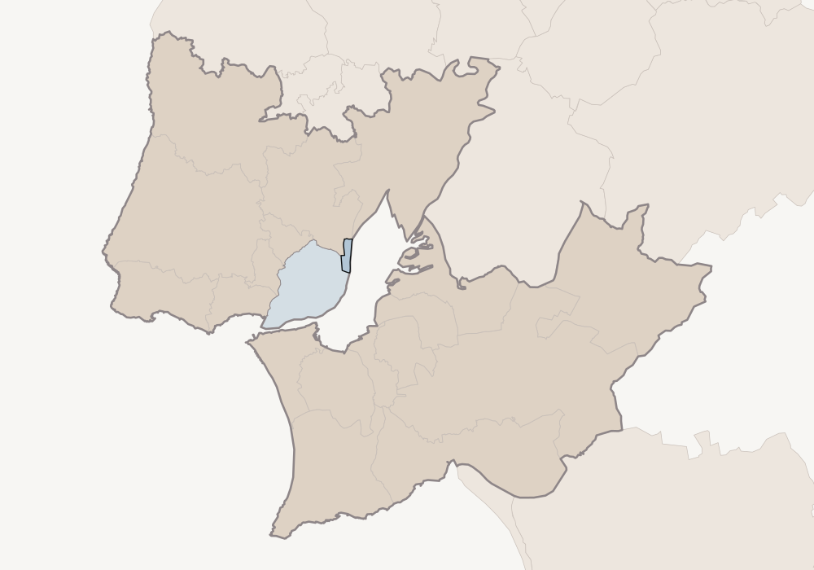

Parque das Nações · Digital Billboard Strategy
A penthouse above the Tagus, shown across the city it stands in.
Property
Parque das Nações, Lisbon, Portugal · a private gated residential complex
Asking Price
€4,500,000
The Residence
416 sqm of private living area · 4 bedrooms · 5 bathrooms
Outdoors
Over 200 sqm of terraces and balconies · skyline and river views
Geography
The Lisbon Metropolitan Area · eighteen municipalities · the Parque das Nações parish at the centre
Duration
Thirty days, continuous
Presented By
Liza Falcão de Sá & Charles Andrews · Aperture Global
Prepared for the owner · The plan for the thirty days ahead
The Geography
One metropolitan area, eighteen municipalities wide.
The penthouse stands in Parque das Nações, the riverfront district built on the Expo ’98 grounds, which is a civil parish of the municipality of Lisbon in Lisbon District. Outdoor advertising of this kind is bought by geography rather than by address, and the geography chosen here is the Lisbon Metropolitan Area — eighteen municipalities either side of the Tagus, from the Atlantic coast at Cascais and Sintra across the city to Vila Franca de Xira, and over the river through Almada and Barreiro down to Setúbal and Palmela.
The parish is drawn in solid blue on the map opposite, on the east bank; the municipality of Lisbon around it is shaded blue, the seventeen others are shaded, and the whole area is outlined as one shape. The pale ground beyond that line is reached by the online advertising instead.

Parque das Nações
Mafra
Vila Franca de Xira
Sintra
Loures
Amadora
Cascais
Oeiras
Almada
Barreiro
Palmela
Setúbal
Parque das Nações & Lisbon
Rest of the Metropolitan Area
Outside It
The parish was established from boundary data rather than inferred from the postcode. The property’s district resolves in the open geocoder to an administrative area of the eighth level — a freguesia — named Parque das Nações, carrying the national statistics code 110662, inside the municipality of Lisbon, inside Lisbon District. The same code and boundary come back from the Portuguese administrative boundary service built on the official charter of administrative areas, which also gives the parish an area of 543.5 hectares. Every one of the eighteen municipalities drawn here was matched to its own national statistics code before it was shaded.
The Eighteen Municipalities18
Lisboa
Amadora
Cascais
Loures
Mafra
Odivelas
Oeiras
Sintra
Vila Franca de Xira
Alcochete
Almada
Barreiro
Moita
Montijo
Palmela
Seixal
Sesimbra
Setúbal
Nine in Lisbon District · nine in Setúbal District, set in grey
Why The Whole Metropolitan Area
A Portuguese buyer for a riverfront penthouse is not, in the main, driving in from the far side of the country on the strength of a roadside screen. They already move through this ground — living in Restelo or Alvalade, working in the Avenidas Novas, keeping a weekend place at Cascais — and the roads and river crossings that carry them run across all eighteen municipalities. The whole area is targeted because that is where the resident buyer already is.
The Scale Of It
Residents of the metropolitan area2,871,133
Residents of the parish itself22,382
Households in the parish9,023
All three are 2021 Portuguese census figures. The metropolitan total is the one published by the Lisbon Metropolitan Area itself; the parish figures are the census counts recorded against parish code 110662.
What The Street Reaches
What a screen in Lisbon can reach, and what it cannot.
A four-and-a-half-million-euro penthouse in Lisbon sells substantially to a buyer from outside Portugal, and a screen in Lisbon does not reach somebody sitting in Paris or New York. We would rather set that out here than leave it unsaid across documents that otherwise all claim the same thing. This part of the campaign does one job; the online campaign does the other.
01 The Resident Buyer
Nearly two point nine million people live in the eighteen municipalities. Among them are the Portuguese and long-settled households who buy at this level and who rarely meet a Lisbon property first on a foreign website — they meet it because it is in front of them, on the roads they already drive. This is the audience outdoor advertising reaches best.
02 The Visitor Already Here
The second audience is international and is reachable from the street because it is standing in the street. Lisbon’s airport sits a little over three kilometres from the parish in a straight line, in the same municipality, and the Oriente station, the arena and the Oceanário are inside the parish itself. A buyer who has come to look at Portugal crosses this ground, and while they are here they are as reachable as any resident.
03 The Buyer Still Abroad
The buyer who has not yet made the trip is not reached here, and nothing in this plan pretends otherwise. That buyer is reached by the online advertising, which is not bound to Portuguese ground and can be pointed at the cities where that money lives. It is set out in its own document. The two are built to be read together, and are deliberately not the same argument twice.
What The Advertising
Leads With
A large apartment in Lisbon is not scarce. Four hundred and sixteen square metres of private living area, with more than two hundred square metres of terrace above the Tagus, behind floor-to-ceiling glass in a gated complex on the Parque das Nações waterfront, is. Read at a distance from a moving car, a screen carries one idea and no more. The idea it carries is the terrace and the river, and the address that explains where it is.
Straight-Line
Distances
Parish to Humberto Delgado Airport3.1 km · 1.9 mi
Parish to the Baixa, central Lisbon6.9 km · 4.3 mi
Parish to Cascais, on the coast29.3 km · 18.2 mi
Parish to Setúbal, south of the river33.0 km · 20.5 mi
Measured from a point inside the parish boundary. Straight-line distances, not journey times: we do not quote a driving time we have not measured.
The Targeting
Chosen by area, not by billboard.
These screens do not work the way billboards used to. We do not take one sign on one road for a month. They are bought programmatically: we set the parts of the metropolitan area the property is served into, and the exchange places the advertisement on whatever digital screens are running there. There is no list of screen addresses in this document, and there will not be one. What we choose is the geography.
In practice: roadside and public digital screens across the eighteen municipalities on the previous page, weighted towards the five areas below.
AreaTargeted GeographyWhy It Is Included
01
Parque das Nações and the east riverfront · the parish itself, with Olivais, Marvila and Beato
Highest emphasis
The district the property stands in and the approaches into it — the ground where the building is recognised on sight, and where the people most likely to mention it to a buyer already live and work.
02
Central and northern Lisbon · Avenidas Novas, Alvalade, Areeiro, Santo António, Lumiar, Estrela, Belém
Highest emphasis
The wealthiest residential ground inside the city, and the most likely origin of a domestic buyer: the household trading out of a large older apartment into something newer with outdoor space. Alvalade is four kilometres from the parish, the Baixa seven.
03
The airport and arena approach · the northern and eastern edge of Lisbon municipality
High emphasis
The one place an international buyer is reachable from the street: the ground an arriving visitor crosses, three kilometres out. High emphasis for its size, because of who moves through it rather than who lives in it.
04
The western arc · Oeiras, Cascais, Sintra, Amadora, Odivelas, Loures
Moderate emphasis
The coastal and northern belt where much of Lisbon’s established money lives, and where the household considering a move back into the city is most often found. Cascais is twenty-nine kilometres out, Sintra twenty-six.
05
The south bank and the outer municipalities · Almada, Seixal, Barreiro, Moita, Montijo, Alcochete, Sesimbra, Palmela, Setúbal, Mafra, Vila Franca de Xira
Steady presence
The far side of the river and the outer ring, over the two Tagus crossings. A lower share of delivery, so the whole area is covered for the full thirty days rather than in bursts.
Where The Emphasis Sits
Areas 01 and 02 take the largest share of delivery: one is the district itself, the other is where a domestic buyer most likely lives today. The airport approach takes the next share despite being small ground, because of who crosses it. The western arc follows, and the south bank and outer municipalities run at a lower, steady share so nowhere is dark.
One consequence of working this way is worth saying plainly: we cannot promise you a photograph of your terrace on a named screen at a named junction. What we can say is which parts of the Lisbon metropolitan area saw it, and how often, once the month is over.
What Is Not Specified
Individual screensNot applicable
Screen countNot applicable
Named road corridorsNot applicable
Marked not applicable rather than to be confirmed. Buying by geography means there is no fixed set of screens to name, now or at any later point.
In A Straight Line
Oriente station 0.8 km · airport 3.1 km · Alvalade 4.3 km · the Baixa 6.9 km · Almada 11.9 km · Belém 12.7 km · Oeiras 20.4 km · Sintra 25.7 km · Cascais 29.3 km · Setúbal 33.0 km — from a point inside the parish boundary; straight-line, not driving times.
What Happens Next
The month ahead, in order.
This is the sequence, not a list of things for you to decide. The geography on the previous pages is set. What follows is the order in which it happens, and the one figure that is genuinely still to come.
StepWhat HappensDetail
01
The artwork is made
Built from the photography of the terraces and the river view, carrying one idea, legible from a moving car. You will see it and approve it before anything runs.
02
The geography is loaded
The five areas on the previous page are entered as the targeting, with the emphasis described there. No screens are named, because none are chosen.
03
Delivery begins
The property starts appearing on digital screens across the eighteen municipalities, continuously, from the first day onward.
04
The weighting is reviewed
Partway through the thirty days we look at where the property is actually being seen and move emphasis between the five areas accordingly. The geography does not change; the balance within it does.
05
The month is reported
At the end of the thirty days you receive a written account of where the property was shown, across what geography and how many times it was seen — measured, not projected.
Still To Come
The total number of times the advertisement will be shown over the thirty days is not stated in this document. That figure becomes a commitment the moment it is written down, so it is given to you only once an operator has committed to it in writing. Nothing else on these pages is waiting on anything.
Alongside This
The online campaign runs at the same time and is described in its own document. It is the part of the marketing that reaches a buyer who is not in Portugal yet. Read together, the two cover the buyer already here and the buyer still abroad — which is why they do not make the same claim twice.

Prepared for the owner
Parque das Nações, Lisbon
Liza Falcão de Sá
Listing Agent · Aperture Global
liza.falcaodesa@apertureglobal.com
+351 962 735 212
Charles Andrews
Listing Agent · Aperture Global
charles.andrews@apertureglobal.com
+1 917 767 1082